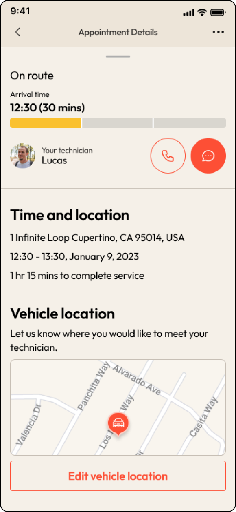
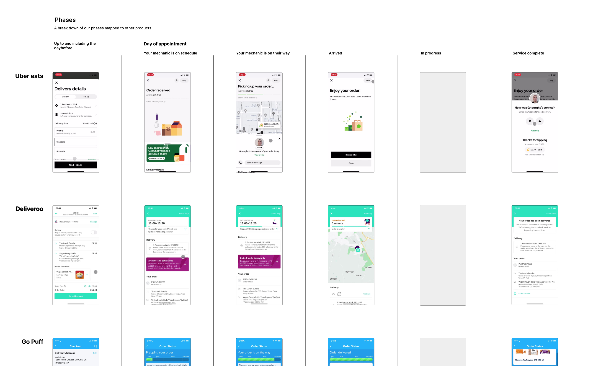
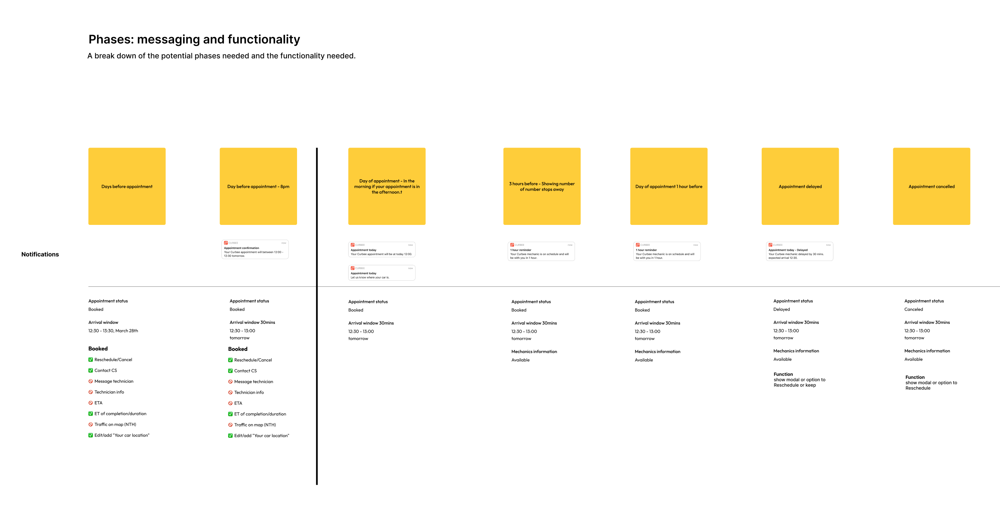
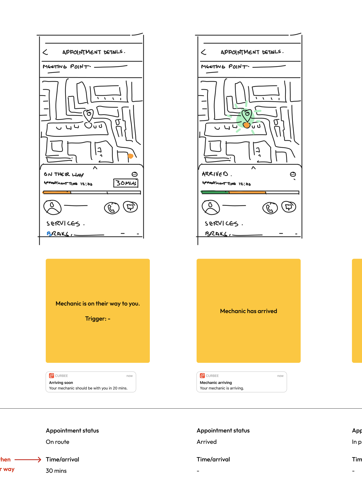
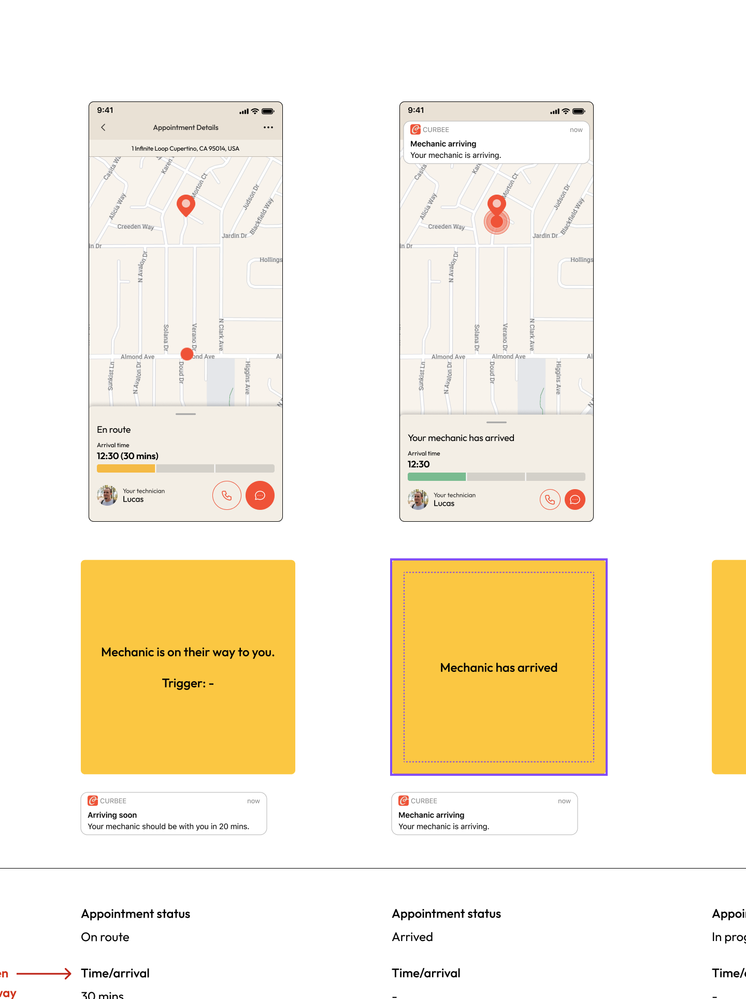

Curbee app Casestudy

Home

Appointment details

Live tracking
The problem
Curbee is a mobile car repair and maintenance service that operates through its website and mobile app. 70% of their users booked services through the curbee mobile site. However, Curbee wanted more customers to use their mobile app as it would allow them to improve their messaging reach and enhance the booking experience.
Curbee decided to add a new feature to their app that would allow users to track their mechanic's and service's progress on the day of the appointment. By doing so, they believed the app would become more useful and set them apart from their competitors, increasing installs.
Research patterns and flows

Research
I reviewed the top apps that feature tracking a driver or delivery, including Deliveroo, Uber Eats, bolt and G Puff.
My goal was to identify common patterns familiar to our users that could be used in the context of the curbee app. I also identified the delivery phases, what the apps communicated at each phase, and what actions the user could take, such as cancelling the order or contacting the driver.
These insights served as a foundation for the feature's user flow, which I was confident would be intuitive for users to understand and use.
Define functionality with post-its

Mapping out the flow and functionality.
Using the research as a foundation, I used Post-it notes to represent each step. Writing down the functionality and actions users could take for every step.
To ensure I didn't overlook any steps or functionality and identify areas for improvement, I reviewed the steps with members of the customer service and engineering teams along with the PM.
At a low cost, we could gain alignment quickly, identify areas developers can start working on, ensure the steps were technically feasible and scrutinise the customer journey.
Replace post-its with screens

Adding sketches to Post-Its

Replacing sketches with final designs
I attached a Sketch, then a wireframe and, finally, the completed design to each Post-it note. The Post-it notes served as a checklist for the functionality, made it easy for the team to see the progress, and ensured no screens were missed.
Using the patterns identified in the research phase saved design time, allowing me to focus on the unique challenges for Curbee. Such as the additional phases and allowing users to add their vehicle location.
Skip user testing
I decided to skip any user testing as it would pull resources away from testing the booking flow, which was the priority. I was also confident that the design patterns we used were commonly understood by users. Instead, I worked closely with the engineer to work out any issues so we could launch the feature.
Outcome
With this feature implemented in the app, users can now book an appointment and track the booking on the day, making the app much more useful and becoming the priority way users book with Curbee.